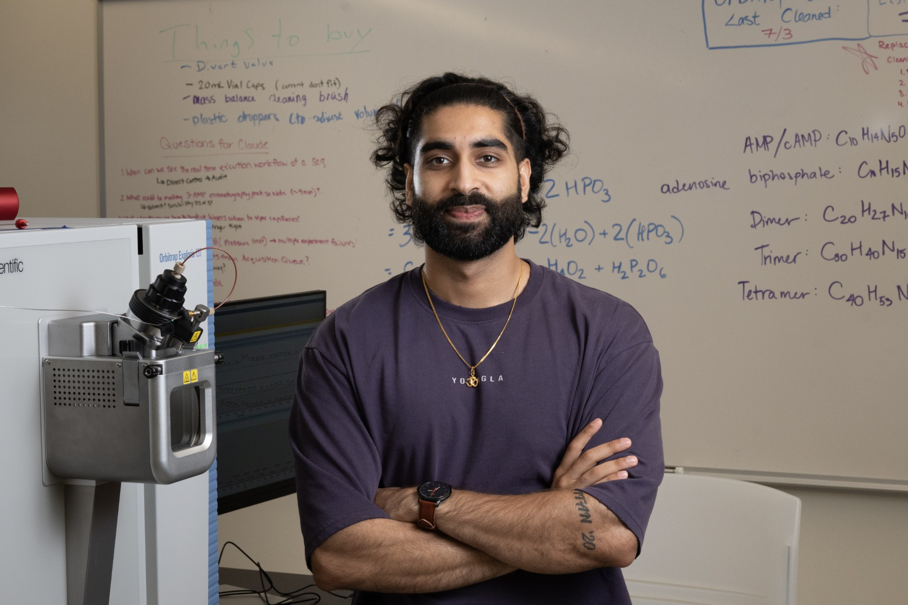

Computational astrobiology · workflows · science communication
I model chemical pathways for life beyond Earth.
I’m a PhD student in Planetary Science & Astrobiology at Purdue, building computational workflows that connect prebiotic chemistry, planetary environments, and future mission science.

Selected Work
Focused projects across research, tooling, and public understanding.
01
Prebiotic Chemistry on Titan
Modeling how life’s molecular building blocks could become accessible in Titan-relevant environments.
Prebiotic Chemistry on Titan
Modeling how life’s molecular building blocks could become accessible in Titan-relevant environments.
Question
Which organic products could become accessible in Titan-like environments?
Method
Thermodynamic modeling of atmospheric feedstocks, impact melt pools, and reaction networks.
Why it matters
This connects prebiotic chemistry to future mission science and Dragonfly-relevant environments.
02
Research Automation Workflows
Building Python-based workflows that make computational chemistry and thermodynamic modeling more reproducible.
Research Automation Workflows
Building Python-based workflows that make computational chemistry and thermodynamic modeling more reproducible.
Question
How can scientific workflows become clearer, faster, and easier to reproduce?
Method
Python tools for Gaussian input generation, thermochemical data parsing, Cantera equilibrium modeling, and figure generation.
Why it matters
Better workflows reduce repetitive labor, clarify assumptions, and make complex research easier to inspect, share, and build upon.
03
Science Communication
Translating astrobiology, space science, and scientific uncertainty into accessible public-facing stories.
Science Communication
Translating astrobiology, space science, and scientific uncertainty into accessible public-facing stories.
Question
How can complex science become easier to understand without losing nuance?
Method
Videos, writing, presentations, educational content, and audience-specific storytelling.
Why it matters
Science communication helps people connect technical ideas with curiosity, meaning, and possibility.
Contact, CV, and Links
Email: madani@purdue.edu
Book a time to meet with me
For collaborations, brainstorming ideas, mentoring, or just connecting.
I keep this master CV document up to date with all of my publications, experience, conferences, and more.
I keep this industry-relevant CV concise for quick context.